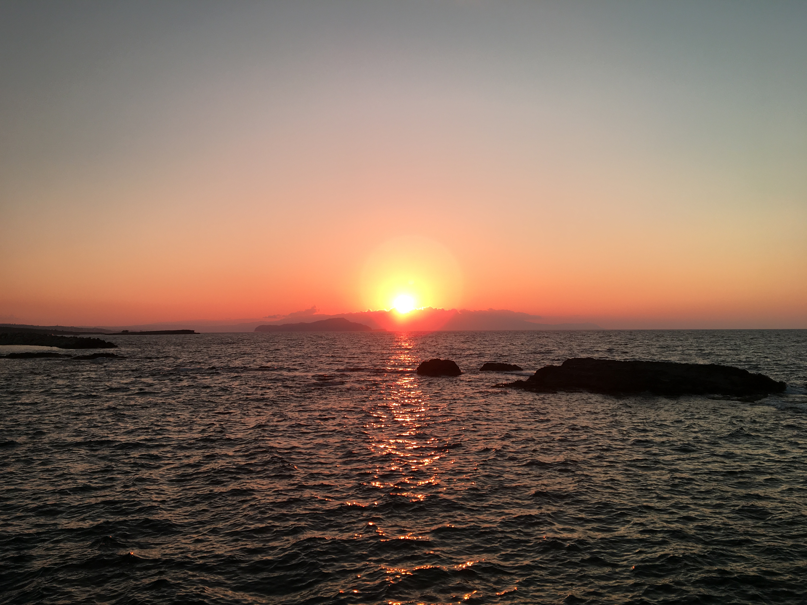
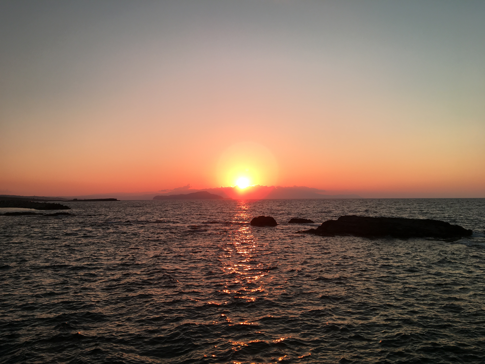

Today one of my greatest passion is programming. I started doing this about a year ago and I found that it fits me very well, so I decided to make a career in programming. I also like many sports like snowboarding, downhill, drifting and watersports. What I like to do the most in my free time is to travel. I love to explore new places, to see different cultures and to meet new people with a different lifestyle. And obviously to take a lot of photos.